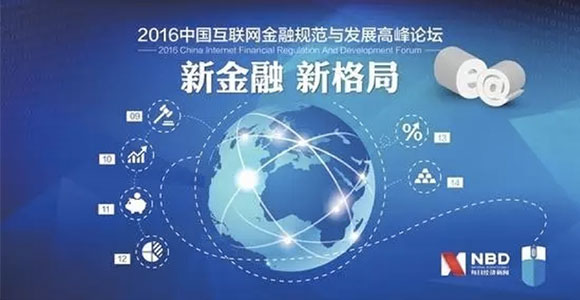

随着各项监管政策的逐步落地，互联网金融迎 来了监管时代，也使互联网金融由鱼龙混杂走 向有序发展，优质合规的互联网金融公司开始获得快速发展的机会。
10月28日，“2016中国互联网金融规范与发展高峰论坛”在深圳盛大启幕，目光再次聚焦互联网金融行业的“规范与发展”。
论坛上，央行金融研究所互联网金融研究中心秘书长伍旭川，从监管等方面详细阐述目前备受关注的金融科技发展状况。伍旭川强调，金融科技是未来主流趋势。金融科技的本质特征，主要体现在去中介化、去中心和定制化，已经成为金融业未来的主流趋势。
而驱动金融发展的金融科技正由移动互联网、大数据、云计算等应用层面，进一步转向区块链等底层技术的创新层面，区块链巨大的战略价值也引发了全球金融业界的争相竞逐。
汇中一直以来关注金融科技，紧随科技浪潮，坚持“科技驱动金融发展”的战略。汇中坚信，区块链将会以更低的成本，解决金融活动的信任难题，将金融信任由双边互信或建立中心信任机制演化为多边共信、社会共信，以共信力寻求解决公信力问题的途径。
可以预见，依靠数据和科技将会推进传统的金融业以及新金融的变革，同时，借助技术优化产品服务形态，更能强化以“技术和服务”为依托的产品的核心价值，从而更好地服务于实体经济和民生。
“监管存在钟摆效应，也就是说在稳定和发展中，要精准地找到一个平衡是很难的。”汇中在发展的过程中一直在通过实践探索稳定和发展、风险和监管之间平衡。汇中坚信，科技让金融更加贴近消费者，基于大数据、区块链技术建立起来的平台和新金融模式，将为用户提供更加高效、便捷、透明、安全的金融服务，将更加有效地保护投资者的权益。
新的技术为互联网金融带来了非常广阔的想象力。有了数据和技术的支撑，互金平台就可以找到更加精准的商业模式。恰如汇中借助互联网技术、大数据征信等手段，将小微企业的借贷需求与分散的居民理财在不同地方、不同时间里进行合规、高效地对接，为用户提供安全、信赖、触手可及的金融服务。
政策落地，行业逐步走向规范和成熟，汇中也面临着全新的、更大的发展机遇，而不变的是汇中“客户利益至上”的原则，作为全球化综合金融企业，汇中努力实现经营人性化、金融责任化，促进行业持续健康发展。